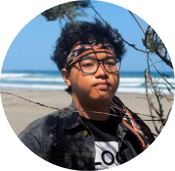

Pencapaian
Ketika lulus dari Sekolah Dasar, Aku adalah pemegang NEM terbaik tingkat sekolah. Kemudian, ketika lulus tingkat Sekolah Menengah Pertama, diriku adalah pemegang Nilai UN Mata Pelajaran Bahasa Indonesia terbaik di sekolah dengan capaian nilai 98. Prestasi itu ku ulang kembali pada tingkat Sekolah Menengah Kejuruan dengan capaian nilai Bahasa Indonesia 94.
Selain gemar belajar, Aku juga senang berorganisasi. Hingga saat ini, terhitung sudah ada 3 organisasi yang pernah aku jajaki yaitu OSIS SMKN 10 Jakarta, ERA-FM UNJ, dan HMP TP UNJ.